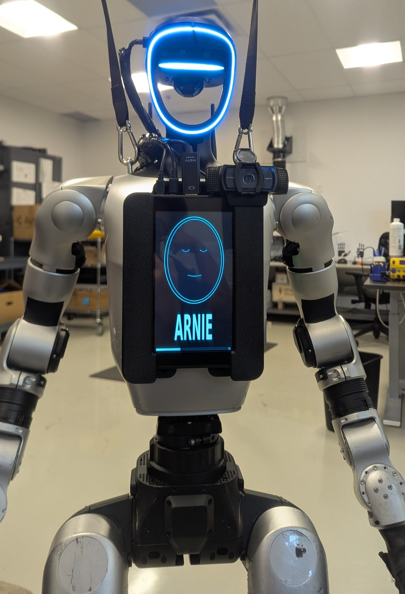
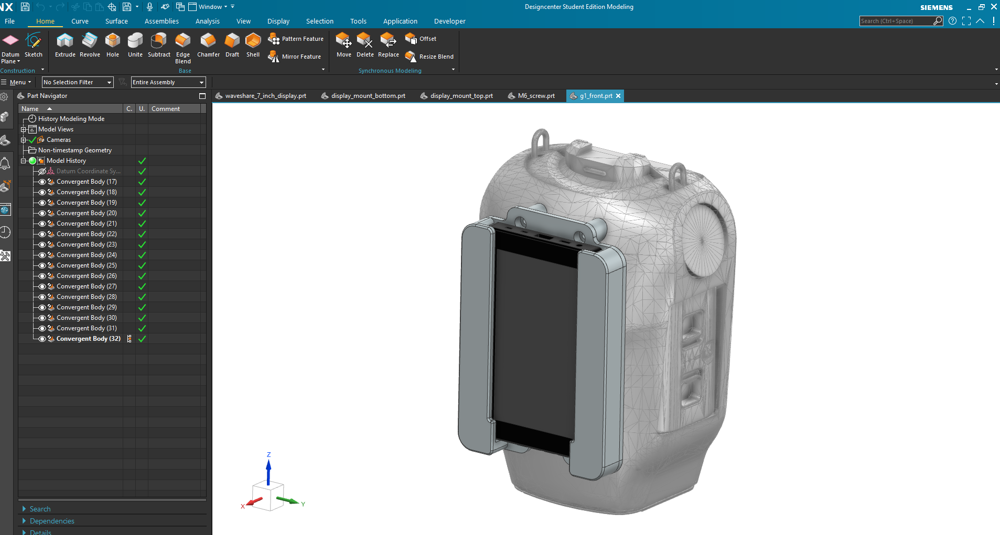
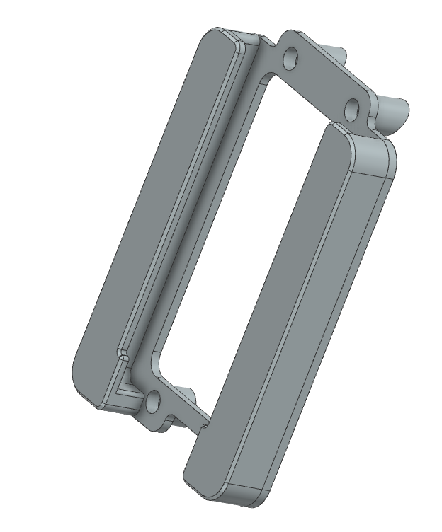
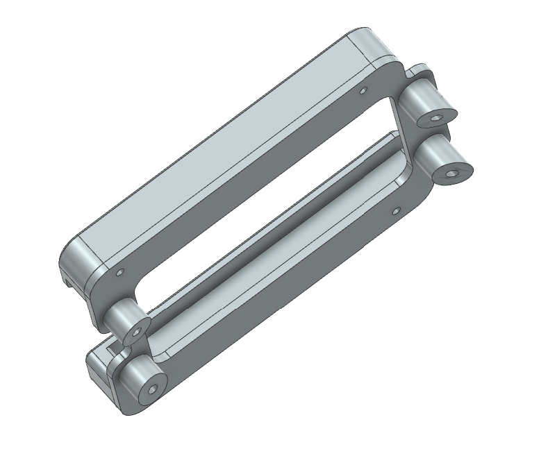
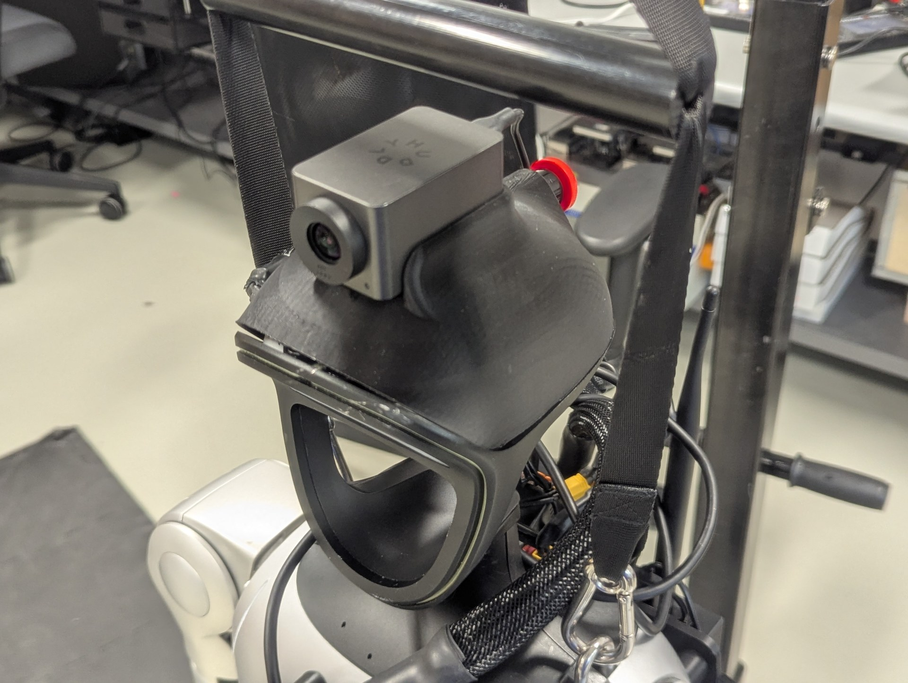
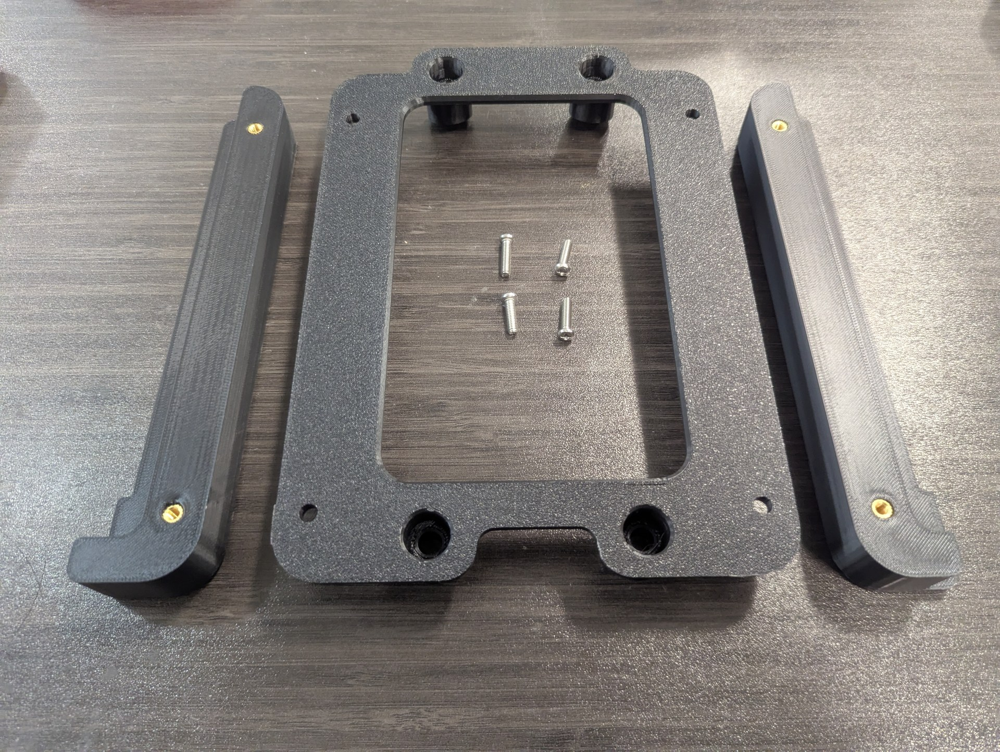
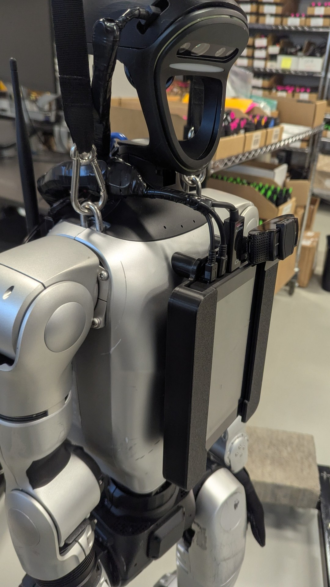

projects / unitree g1 / 7
Robot Camera & Display Mounts — Siemens NX CAD
Custom mechatronic hardware mounts engineered in Siemens NX to expand the Unitree G1 humanoid's sensory perception and human-robot interaction (HRI). Features a dual-purpose skull bracket combining an overhead depth camera with an emergency stop button, alongside a rigid chest-mounted 7-inch interactive display housing the "ARNIE" expressive facial UI and webcam.
- Designed custom mounting brackets and clamping interfaces in Siemens NX with precision fitment for the G1 chassis.
- Engineered a modular skull camera rig co-locating RealSense depth vision and the physical hardware E-Stop mushroom button.
- Fabricated lightweight PETG 3D-printed enclosures integrating a 7-inch interactive touchscreen and cable management channels.
Physical Integration · ARNIE Face GUI

CAD Architecture · Siemens NX

Interactive Display Mount — Chest-mounted 7-inch touchscreen running the ARNIE facial UI with Siemens NX CAD assembly.
01Siemens NX CAD Design & Assembly
- Parametric 3D solid modeling in Siemens NX with precise clearance fitment for the G1 humanoid's upper torso geometry.
- Split-clamp clamping architecture securing rigidly around structural chassis rails without modifying factory hardware.
- Integrated internal wire routing channels and M3 heat-set brass threaded inserts for durable repeated assembly.
NX Sub-Assembly · Mounting Flange

NX Sub-Assembly · Clamp Profile

Parametric Component Detailing — Modular clamping brackets and mounting tabs modeled in Siemens NX for rapid FDM 3D printing.
02Head-Mounted Camera & E-Stop Rig
- Ergonomic skull-top bracket providing an elevated vantage angle for spatial depth perception and manipulation tasks.
- Direct mechanical integration with the red safety mushroom button for immediate physical operator access during walking tests.
- Contoured base plate matching the G1 head curvature with secure vibration-resistant fastening.
Physical Integration · Head Bracket

Dual-Function Skull Mount — Overhead camera bracket co-locating RealSense depth vision and the physical hardware emergency stop.
03Rapid Prototyping & Interactive HRI
- Printed in high-toughness PETG with 4 perimeter walls and 25% gyroid infill for maximum torsional stiffness and impact resistance.
- Houses a 7-inch high-contrast display running the custom "ARNIE" animated facial GUI for real-time robotic social cues.
- Low-profile side geometry maintains full range of motion for both 7-DOF robot arms without workspace interference.
FDM 3D Print · Reverse Bezel

Chassis Fitment · Side Profile

Chassis Clamping & Enclosure — Rear boss pattern and contoured side profile securing the interactive touchscreen display to the robot.